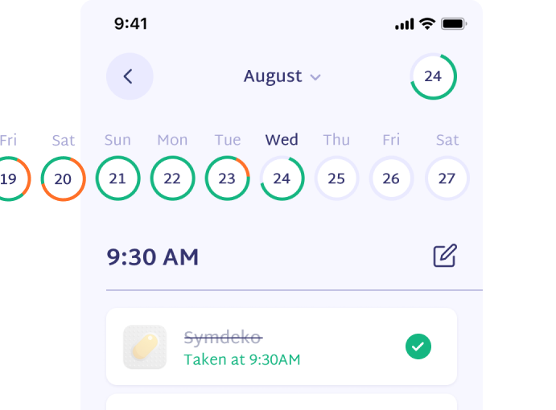

It is an application for patients with chronic diseases who need to take medications for a long time in a large quantities. At the same time, medications often give side effects that need to be monitored.
People are more likely to communicate and trust a humanized character than just code. To motivate people describe their symptoms, Therapy Buddy was created.
By going to the calendar, you can see how well the patient keeps his medication routine. Diagrams were made for quick reading. The green part shows the taken medications and the red part shows the missed ones. If the user did not mark the taking of medications, they are marked as missed.
